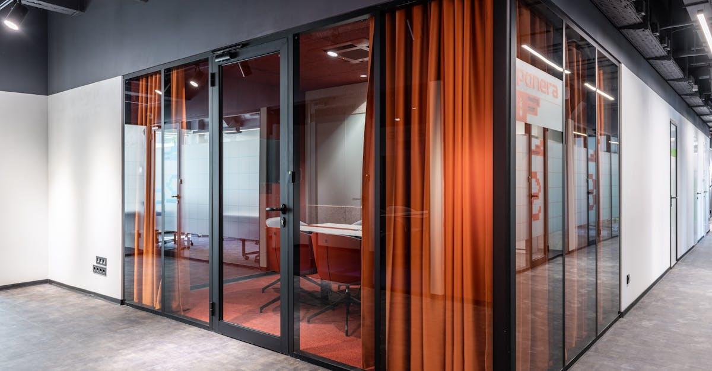

Une Décision Surprise qui Redéfinit le Paysage des Paiements Internationaux
La nouvelle est tombée comme un couperet : la Banque Centrale du Brésil a officiellement interdit l'utilisation des stablecoins et autres cryptomonnaies comme moyen de règlement dans les paiements transfrontaliers. Cette mesure, qui prend effet immédiatement, vise principalement les entreprises de technologie financière (fintechs) et les prestataires de services de paiement, coupant ainsi le canal technique permettant ces flux internationaux. Il ne s'agit pas d'une interdiction générale des crypto-actifs, car les investisseurs individuels conservent la liberté d'acheter et de détenir des actifs numériques. Cependant, cette distinction est cruciale : le Backend, cette infrastructure invisible mais vitale qui permet aux transactions de circuler, est désormais fermé aux cryptos dans ce contexte spécifique. La Banque Centrale invoque des préoccupations liées à la volatilité, à la protection des consommateurs et à la stabilité financière pour justifier cette décision radicale. Alors que le Brésil s'était jusqu'alors montré relativement ouvert aux innovations dans le domaine des paiements, cette volte-face soulève de nombreuses questions quant à l'avenir des solutions basées sur la blockchain pour les transferts internationaux. L'objectif affiché est de renforcer la sécurité et la prévisibilité des flux financiers, mais le chemin choisi pourrait bien freiner l'adoption de technologies prometteuses. Comprendre les implications de cette décision est essentiel pour toute entreprise ou particulier opérant dans l'écosystème des paiements et des actifs numériques.
👉 À lire : Brésil : 27 plateformes de prédiction crypto bannies – Quel impact ?

Les Impacts Concrets pour les Fintechs et les Entreprises
Cette interdiction frappe de plein fouet les fintechs et les entreprises qui avaient intégré les stablecoins ou d'autres cryptomonnaies dans leurs offres de paiements transfrontaliers. Pour ces acteurs, cela signifie une reconfiguration forcée de leurs opérations. Les solutions permettant des virements internationaux rapides et à moindre coût grâce aux cryptos sont désormais caduques au Brésil. Il faut imaginer le travail de développement et d'intégration qui a été réalisé pour mettre en place ces systèmes. Du jour au lendemain, une partie de leur proposition de valeur disparaît. Les entreprises qui utilisaient ces services pour leurs propres flux commerciaux – par exemple, pour payer des fournisseurs étrangers ou recevoir des paiements de clients internationaux – doivent trouver des alternatives. Cela pourrait se traduire par un retour aux méthodes traditionnelles, souvent plus lentes et plus coûteuses, impliquant les banques et les réseaux SWIFT. La question de la conformité réglementaire devient primordiale. Les fintechs doivent s'assurer qu'elles respectent scrupuleusement la nouvelle directive, sous peine de sanctions sévères. Cela implique une révision de leurs processus internes, de leurs partenariats et potentiellement de leurs licences d'exploitation. L'agilité, qui est souvent la marque de fabrique des fintechs, est ici mise à l'épreuve. Elles doivent non seulement s'adapter rapidement mais aussi anticiper les futures évolutions réglementaires, qui pourraient être inspirées par la décision brésilienne dans d'autres juridictions. La recherche de solutions innovantes, mais cette fois conformes, devient une priorité absolue pour maintenir leur compétitivité sur le marché.
👉 À lire : Marchés de prédiction : La CFTC s'oppose aux États
La Distinction Clé : Investissement Individuel vs. Règlement de Paiement
Il est fondamental de bien saisir la nuance introduite par la Banque Centrale du Brésil. La mesure ne vise pas à diaboliser les crypto-monnaies dans leur ensemble, mais spécifiquement leur utilisation comme rails de paiement pour les transactions internationales. En d'autres termes, si vous êtes un particulier au Brésil et que vous souhaitez acheter du Bitcoin, de l'Ethereum ou même un stablecoin comme l'USDT, vous pouvez toujours le faire. Les plateformes d'échange de crypto-monnaies locales ou internationales accessibles aux résidents brésiliens restent opérationnelles pour l'achat, la vente et la détention de ces actifs. La différence réside dans l'usage : ces actifs ne peuvent plus servir de véhicule de transfert de fonds dans le cadre de paiements transfrontaliers effectués par des entreprises réglementées. La Banque Centrale cherche à séparer le marché de l'investissement spéculatif ou de la détention de valeur du système financier traditionnel utilisé pour les flux commerciaux. Cette approche vise à limiter les risques systémiques potentiels tout en laissant une porte ouverte à l'innovation dans d'autres domaines, comme la tokenisation d'actifs ou l'utilisation de technologies blockchain pour l'efficacité interne des institutions financières, à condition qu'elles n'impliquent pas de règlement en cryptos pour les transactions internationales. Cette distinction est essentielle pour comprendre la portée réelle de la décision et ses limites.
Pourquoi cette Réglementation ? Les Motivations de la Banque Centrale
Les raisons invoquées par la Banque Centrale du Brésil pour justifier cette interdiction méritent une analyse approfondie. Au premier rang des préoccupations figure la volatilité intrinsèque de la plupart des crypto-actifs. Contrairement aux monnaies fiduciaires ou même aux stablecoins, dont la valeur est censée être arrimée à un actif stable (comme le dollar US), les crypto-monnaies peuvent connaître des fluctuations de prix extrêmes en très peu de temps. Utiliser un tel outil pour des paiements transfrontaliers introduirait une incertitude considérable sur le montant final reçu ou payé, posant des défis majeurs pour la comptabilité et la planification financière des entreprises. Ensuite, la question de la protection des consommateurs est centrale. La Banque Centrale souhaite s'assurer que les utilisateurs, qu'ils soient particuliers ou entreprises, ne soient pas exposés à des risques disproportionnés liés à la fraude, à la manipulation de marché ou à la perte de fonds due à des défaillances techniques ou à des hacks. La nature souvent décentralisée et parfois opaque de certaines opérations crypto rend la surveillance et l'intervention difficiles. Enfin, la stabilité financière globale du pays est un enjeu majeur. L'intégration non régulée de crypto-actifs dans les flux de paiement internationaux pourrait potentiellement créer des vulnérabilités dans le système financier brésilien, notamment en cas de crise majeure sur le marché des cryptos. En imposant cette limite, le régulateur cherche à préserver un environnement financier stable et prévisible, quitte à freiner certaines innovations jugées trop risquées à ce stade. Ces motivations, bien que compréhensibles d'un point de vue prudentiel, soulignent le fossé qui existe encore entre le monde de la finance traditionnelle et celui des actifs numériques.
L'Avenir des Paiements Transfrontaliers : Alternatives et Innovations
Face à cette nouvelle réalité réglementaire au Brésil, le secteur des paiements transfrontaliers doit innover et s'adapter. Les entreprises recherchent activement des alternatives viables aux solutions crypto précédemment utilisées. Cela inclut le renforcement des réseaux de paiement traditionnels, comme SWIFT, bien que souvent critiqués pour leur lenteur et leurs coûts. De nouvelles initiatives visent à moderniser ces systèmes, par exemple avec le projet SWIFT gpi (Global Payments Innovation), qui apporte plus de transparence et de rapidité. Parallèlement, des solutions de paiement basées sur les monnaies numériques de banques centrales (CBDC) pourraient émerger comme une alternative intéressante à l'avenir. Bien que le Brésil n'ait pas encore lancé sa propre CBDC, de nombreux pays explorent cette voie. Les CBDC offriraient les avantages de la technologie numérique (rapidité, efficacité) tout en étant émises et garanties par une autorité monétaire, éliminant ainsi les risques de volatilité et de contrepartie associés aux cryptos. Les plateformes de paiement internationales traditionnelles, comme Wise (anciennement TransferWise) ou Revolut, continuent d'affiner leurs offres, en utilisant des technologies propriétaires et des partenariats bancaires pour optimiser les transferts. Pour les entreprises spécialisées dans le trading algorithmique de cryptomonnaies, comme celles qui utilisent des agents IA pour naviguer sur les marchés, cette décision souligne l'importance de la diversification géographique et de la veille réglementaire. Si le Brésil ferme une porte, d'autres marchés restent ouverts, et la flexibilité est la clé. L'objectif reste de trouver des moyens rapides, sûrs et économiques de déplacer des fonds à travers les frontières, et l'innovation continue, qu'elle soit réglementée ou non, est le moteur de ce secteur.
Le Marché Brésilien des Cryptos : Impact sur les Investisseurs Individuels
La décision de la Banque Centrale du Brésil, bien que restrictive pour les paiements transfrontaliers, laisse intact le droit des citoyens brésiliens à investir dans les crypto-monnaies. Cette distinction est cruciale pour comprendre le paysage local. Les investisseurs individuels peuvent toujours acheter, vendre et détenir des Bitcoin, Ethereum, et autres actifs numériques via les plateformes d'échange opérant dans le pays ou accessibles depuis le Brésil. Les plateformes locales, qui ont vu leur popularité croître ces dernières années, continuent de proposer leurs services, en se concentrant sur l'achat et la vente d'actifs plutôt que sur les flux de paiement internationaux. Cela signifie que l'engouement pour les crypto-monnaies comme classe d'actifs potentiellement rémunératrice ne s'arrête pas net. Cependant, il est probable que cette mesure ait un effet dissuasif psychologique, signalant une prudence accrue de la part des autorités. Les investisseurs pourraient devenir plus cautelous quant à l'utilisation de solutions de paiement basées sur les cryptos, même pour des transactions domestiques, par crainte de futures restrictions. L'absence de possibilité d'utiliser des stablecoins pour régler des paiements transfrontaliers peut également compliquer la vie des traders actifs qui utilisaient ces derniers pour déplacer rapidement des fonds entre différentes plateformes ou pour se protéger contre la volatilité du réal brésilien. Pour les traders algorithmiques et les utilisateurs d'agents IA pour le trading crypto, cela signifie qu'il faut adapter les stratégies : les flux de fonds vers et depuis des plateformes étrangères pour le trading pourraient devoir passer par des canaux bancaires plus traditionnels, ajoutant potentiellement des délais et des coûts. Néanmoins, l'opportunité de trading sur les marchés d'actifs numériques reste ouverte pour les investisseurs résidents.
Leçons Mondiales : La Réglementation Crypto, un Défi Permanent
La décision du Brésil s'inscrit dans une tendance mondiale plus large où les régulateurs cherchent à trouver un équilibre entre l'innovation portée par les technologies blockchain et la nécessité d'assurer la stabilité financière et la protection des utilisateurs. Ce cas brésilien illustre parfaitement la complexité de la tâche. Interdire purement et simplement l'utilisation des cryptos pour les paiements transfrontaliers peut sembler une solution radicale, mais elle reflète une préoccupation légitime concernant les risques associés. D'autres pays adoptent des approches différentes, allant de l'autorisation encadrée à des interdictions plus générales. L'Union Européenne, par exemple, avec son règlement MiCA (Markets in Crypto-Assets), tente de créer un cadre harmonisé pour les émetteurs et les fournisseurs de services de crypto-actifs, tout en restant prudente sur l'intégration de ces actifs dans le système financier traditionnel. La question clé pour l'avenir est de savoir si les régulateurs parviendront à établir des règles claires et cohérentes qui favorisent l'innovation responsable tout en maîtrisant les risques. Pour les entreprises opérant dans l'espace crypto, et particulièrement pour celles développant des solutions basées sur l'IA pour le trading, la veille réglementaire internationale devient une composante essentielle de leur stratégie. Anticiper les mouvements réglementaires, comprendre les motivations des différents acteurs (banques centrales, gouvernements, agences de régulation) et adapter ses produits et services en conséquence est vital. Le Brésil a choisi une voie restrictive pour certains usages, mais cela ne signifie pas la fin des crypto-monnaies. Cela souligne plutôt la nécessité d'une approche nuancée et adaptée au contexte local, tout en reconnaissant les défis inhérents à l'intégration de ces nouvelles technologies dans l'économie mondiale.
Conclusion
La récente décision de la Banque Centrale du Brésil d'interdire les stablecoins et autres crypto-monnaies comme moyens de règlement dans les paiements transfrontaliers marque un tournant significatif. Si cette mesure vise à protéger le système financier et les consommateurs des risques liés à la volatilité et à l'incertitude, elle soulève des défis importants pour les fintechs et les entreprises qui avaient adopté ces technologies. Il est essentiel de rappeler que cette interdiction ne concerne pas l'investissement individuel dans les actifs numériques, qui reste permis. Pour les acteurs du secteur, notamment ceux qui utilisent l'intelligence artificielle pour le trading de cryptomonnaies, cette actualité rappelle l'importance capitale de la flexibilité et de l'adaptation. Naviguer dans un environnement réglementaire en constante évolution exige une veille stratégique et une capacité à ajuster les opérations. Alors que le Brésil ferme une porte, l'innovation continue ailleurs, et la recherche de solutions de paiement transfrontalier efficaces et sécurisées reste un objectif majeur. L'avenir nous dira si d'autres pays suivront cette voie restrictive ou s'ils opteront pour des cadres réglementaires plus ouverts, favorisant un équilibre entre innovation et sécurité.